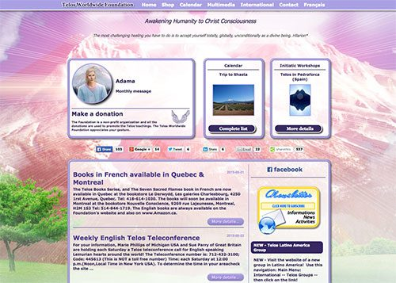

Réseau
Réseau TELOS mondial
CONTACT FRANÇAIS DE LA FONDATION TELOS MONDIAL (Dordogne)

Cet organisme sans but lucratif a pour mission de participer à l'éveil de la conscience de l'humanité à travers la connexion avec TELOS et le MONT SHASTA. La vision de la Fondation Telos est celle d'un monde où l'Amour universel réunit toutes les races et toutes les nations en une seule famille, où la paix règne perpétuellement dans toutes les régions de la planète. > Voir le site de la Fondation Telos Mondial > Voir la fiche du correspondant de la fondation Telos Mondial en France- Je précise que je suis indépendante de l'association Telos France -
N.B. : Les correspondants de chaque pays connaissent Telos et ont visité le Mont-Shasta plusieurs fois. Vous pouvez communiquer avec elles pour obtenir des informations ou pour partager au sujet de Telos.Le livre : Telos - Révélations de la Nouvelle Lémurie
Ci-dessous les premiers ouvrages qui ont révélé le peuple de TELOS sous le MONT SHASTA en 2003. Ces 2 livres sont encodés d'une énergie spécifique qui, réveillant les mémoires de notre Âme, nous place sur le chemin de l'ascension de la conscience vers la 5ème Dimension. > Voir Rubrique Qui suis je
Livre d'AURELIA LOUISE JONES (en français)
Livre de DIANNE ROBBINS ( en anglais )
REUNIONS ZOOM MEETING du réseau TELOS INTERNATIONAL
« Greetings Beloved Sisters and Brothers of Love, Light, and Joy! »
Périodiquement les représentants Telos de différents pays (à ce titre je rappelle que je suis indépendante de l'association Telos France) se retrouvent par Zoom pour une rencontre de connexion avec les énergies du Cœur.
Nous prenons un temps de partage puis nous échangeons concernant l'actualité de nos activités dans nos pays respectifs. Les échanges se font en anglais.